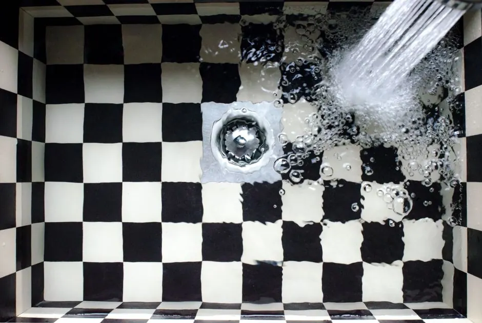
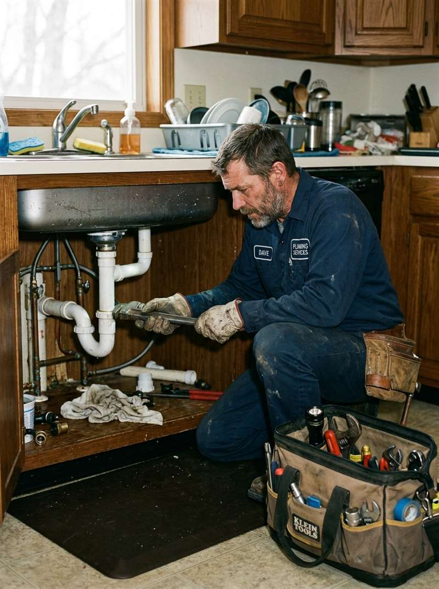
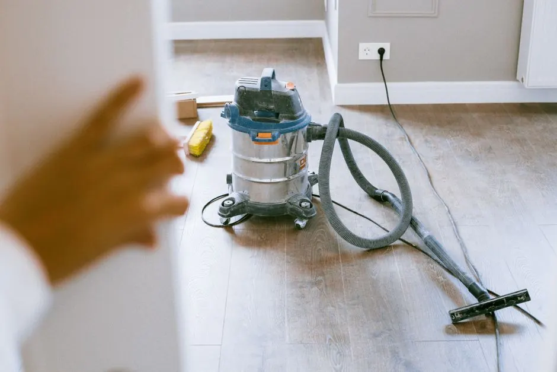
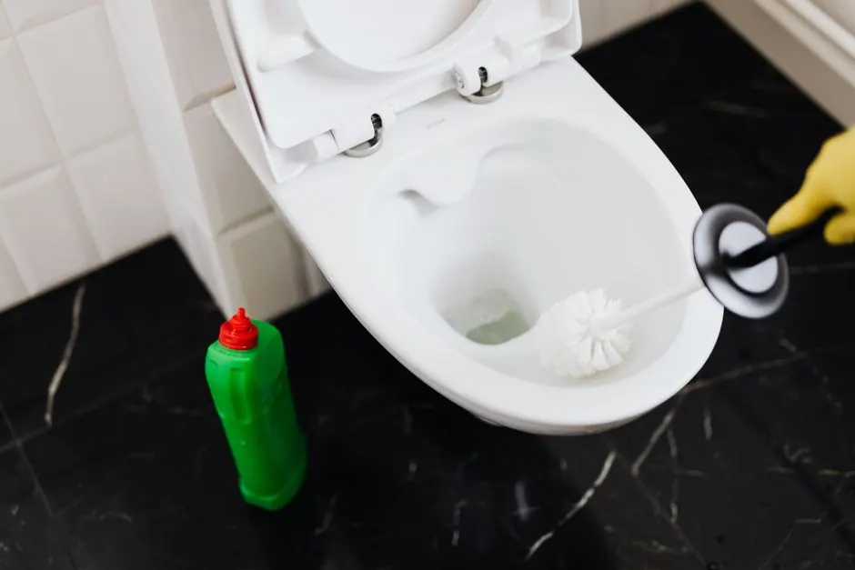

Drain Inspection
We perform a thorough inspection using camera equipment to identify the root cause of the blockage.
Emergency Drain Cleaning in sarasota is crucial when you face clogged drains or sewer backups. Our urgent drain unclogging in sarasota ensures your plumbing is restored quickly, preventing further damage.

Emergency Drain Cleaning in sarasota involves the rapid response to severe drain issues, including clogged drains and sewer backups. This service utilizes specialized tools like drain snakes and hydro jetters to clear blockages effectively.
Local sarasota customers often require emergency drain cleaning due to heavy rainfall or root intrusion, which can lead to unexpected clogs. Our 24/7 emergency drain cleaning in sarasota ensures you receive prompt assistance when you need it most.
Our emergency drain cleaning service covers comprehensive diagnostics and blockage removal. Additional services may be required for long-term solutions.
We perform a thorough inspection using camera equipment to identify the root cause of the blockage.
Our technicians use drain snakes and hydro jetters to effectively remove all debris and clogs.
After clearing the blockage, we conduct a follow-up inspection to ensure everything is functioning correctly.
We provide tips and recommendations for maintaining your drains to prevent future issues.
Our technician arrives promptly to evaluate the situation, identifying the cause of the blockage and the best approach for emergency drain cleaning in sarasota.
We prepare the necessary tools, including drain snakes and hydro jetters, to ensure we can tackle any blockage effectively.
Using advanced techniques, we clear the blockage, ensuring all debris and buildup are removed to restore proper flow.
Post-cleaning, we conduct a thorough inspection using camera equipment to ensure the issue is fully resolved and to identify any potential future problems.
We walk you through the work performed, discuss maintenance tips, and answer any questions to ensure your satisfaction with our emergency drain cleaning service.

Our technician arrives promptly to evaluate the situation, identifying the cause of the blockage and the best approach for emergency drain cleaning in sarasota.
Used to break apart and remove clogs in pipes, providing quick relief for slow or blocked drains.
Utilizes high-pressure water to clear stubborn blockages and clean pipe walls effectively.
Allows for accurate diagnosis of plumbing issues by providing a visual of the inside of pipes.
Ideal for clearing tough clogs in larger pipes, ensuring thorough cleaning and maintenance.

A family in Gulf Gate experienced a severe sewer backup, causing flooding in their basement.
After: After our emergency drain cleaning, the sewer line was cleared, and the basement was restored, preventing further damage.
Book this service →A clogged kitchen sink was causing water to pool and slow drainage.
After: Post-service, the sink drained perfectly, and the family was relieved of the kitchen hassle.
Book this service →
Storm drains in a residential area were clogged, leading to street flooding during heavy rain.
After: Our team cleared the blockage, ensuring proper drainage and preventing flooding in the neighborhood.
Book this service →Emergency drain cleaning addresses several critical plumbing issues that can escalate if ignored.
Ask a pro →Our emergency drain cleaning in sarasota quickly resolves clogs, restoring proper drainage and preventing further damage.
We provide urgent drain unclogging in sarasota to ensure your sinks and fixtures drain properly, preventing future headaches.
Our team is equipped to handle sewer backups effectively, ensuring your plumbing system is clear and functional.
Emergency drain cleaning in sarasota is a service that addresses urgent plumbing issues, such as clogged drains or sewer backups, using specialized tools.
Our emergency drain cleaning services typically arrive within 30 minutes to 1 hour, depending on traffic and location in sarasota.
Before our team arrives, ensure the area around the drain is accessible and clear of obstacles to facilitate a quick response.
Emergency drain cleaning costs typically range from $180 to $450 in sarasota, depending on the severity of the blockage and the methods used.
Contact us today for urgent drain unclogging in sarasota. Our licensed plumbers are ready to help you 24/7.
Get Help Now 941 454 9876 →We're here to help with all your drain cleaning needs. Contact us for a free estimate or to schedule a service. We respond quickly, typically within one hour.